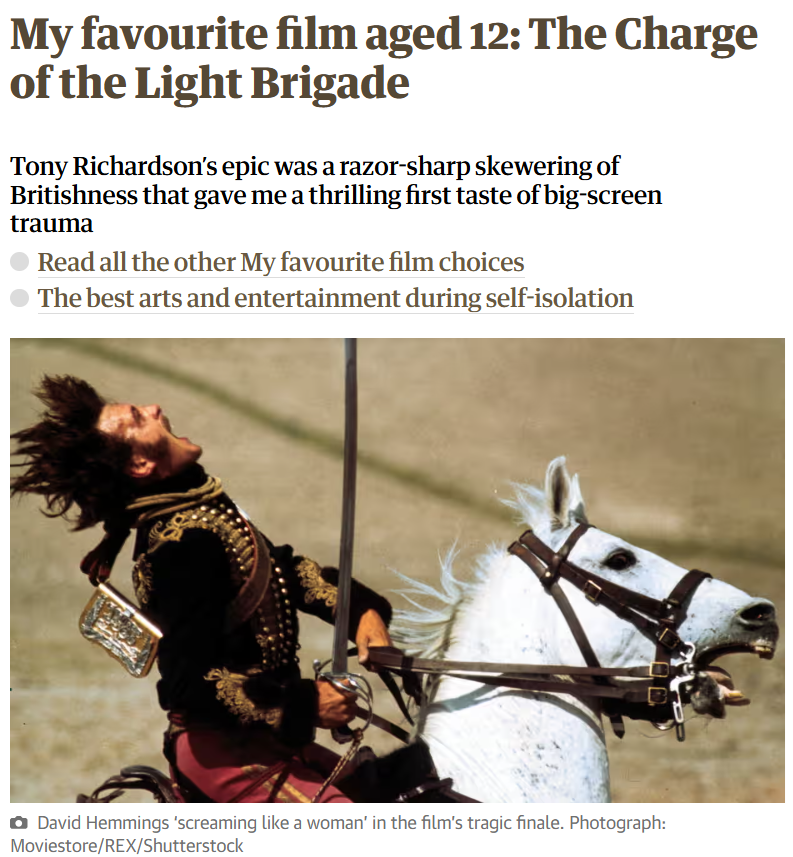
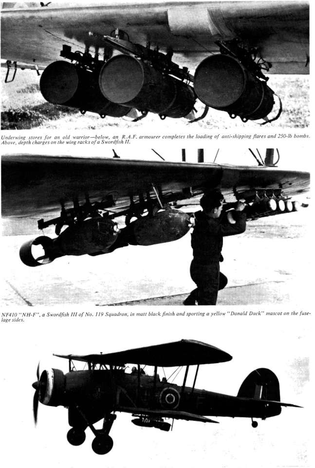
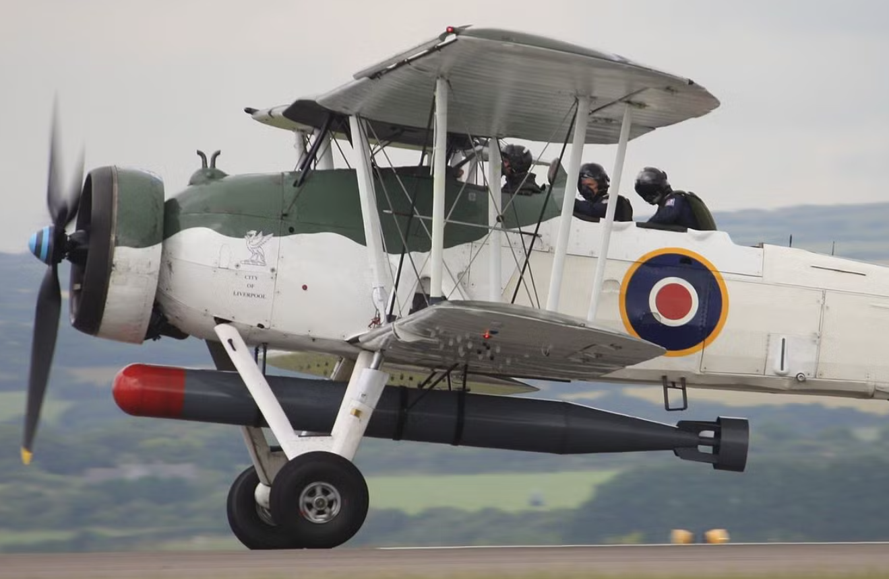
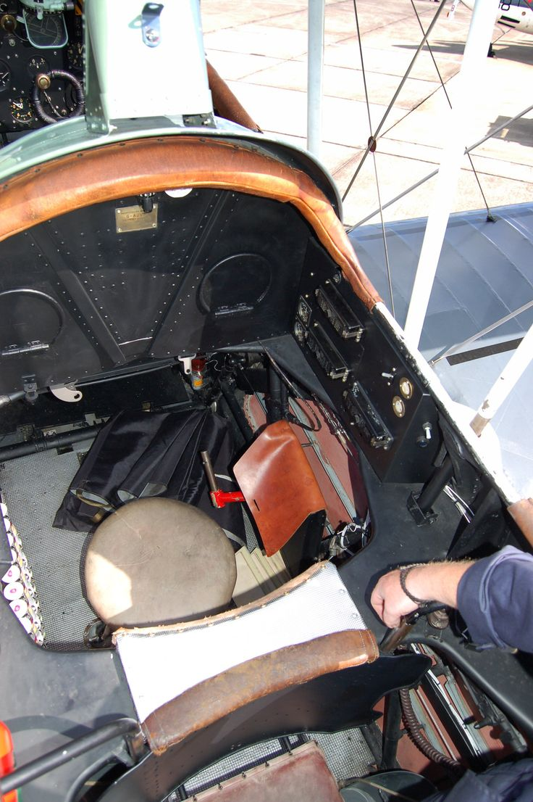
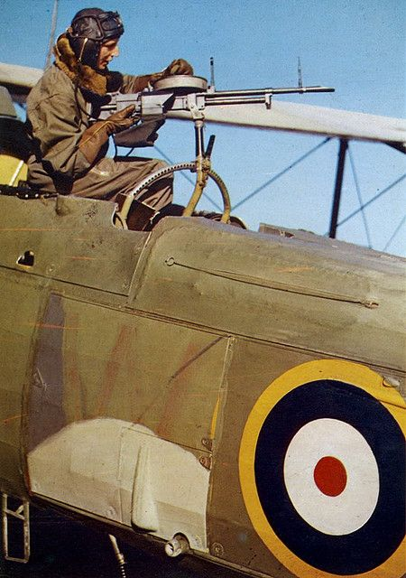

WW2 중 항모에서의 야간 작전 (10) - 섶을 지고 불 속으로
게시: 2025-04-24T06:30:45+09:00
<휘발유통을 짊어지고 어디로 뛰어들라고?> 타란토 군항을 뇌격기로 습격하는 작전 계획의 명칭은 'Operation Judgement' (심판 작전). 영국해군 일부 장교들은 이 위험한 작전에 대해 '심판 받는 쪽이 과연 이탈리아 해군이냐 영국해군이냐'라며 불안해하기도. 실은 실제 적탄에 노출될 소드피쉬 조종사들의 불안감은 매우 높았음. 한 조종사는 '경기병 여단(Light Brigade)의 돌격 때도 지휘부가 그런 결과를 예측하고도 돌격 시켰겠냐'라며 불만을 터뜨리기도.

(여기서 말하는 경기병 여단의 돌격이란 1854년 크리미아 전쟁 때 제7대 카디건 공작(7th Earl of Cardigan)인 제임스 브루드넬(James Brudenell)이 감행했던 발라클라바 (Balaclava) 전투에서의 돌격을 말하는 것. 러시아군 포병들이 완벽한 준비를 갖추고 있던 진지에 대해 무지성 닥돌했다가 대실패로 끝난 이 전투에서, 총 674명 중 107명이 현장에서 전사. 나중에 부상으로 끝내 숨진 사람들은 그보다 훨씬 많았을 것으로 추정. 이 돌격은 워낙 유명하여 2차례나 영화로도 만들어졌고 영국육군의 매관매직 제도 자체에 대한 개혁도 이루어짐. 그럼에도 불구하고 카디건 공작이 유행시킨 가벼운 겉옷인 카디건은 보통 명사로 굳어질 정도로 유명해짐.) '지들은 안전한 후방에서 뇌격기만 날려보내니까 이게 얼마나 위험한 작전인지도 모르고 말 쉽게 한다'라며 입이 대빨 튀어나왔던 소드피쉬 조종사들을 더욱 불안하게 만든 것은 보조 연료 탱크. 전에도 언급했듯이 소드피쉬는 체공 시간이 무척 긴 항공기였지만 항속거리는 의외로 매우 짧아서 어뢰를 장착한 상태에서 840km였음. 이유는 속도가 너무 느렸기 때문. 그러니 전투 반경은 더욱 짧았음. 실제 작전에서는 이리저리 우회도 해야 하고 급상승 등등 고려할 점이 많았으므로 전투 반경은 단순히 항속거리의 420km가 아니라 250km 수준. 그런데 그 정도면 이탈리아 공군의 폭격에 너무나도 위험하게 노출되는 근거리. 실제로 이것저것 고려해서 정해진 소드피쉬들의 출격 지점은 타란토 항구에서 약 315km 떨어진 지점. 그러니 어떻게든 소드피쉬에 연료를 더 실어야 했음. 방법은 간단. 보조 연료탱크를 달면 됨. 타란토 항구 습격의 주무기는 어뢰지만, 대공포 제압과 시선 분산 등을 위해 일부 소드피쉬에는 폭탄을 장착하기로 했는데, 폭탄은 소드피쉬의 양쪽 날개 밑에 나누어 달았으므로 기체 아래에 보조 연료 탱크를 달면 되었음.

(맨 위 사진은 소드피쉬 날개 밑에 달린 대잠용 폭뢰. 중간 사진은 소드피쉬 날개 밑에 250파운드짜리 폭탄과 해상 조명탄을 장착하는 모습. 맨 아래 사진은 폭탄을 장착하고 나는 소드피쉬. 소드피쉬의 날개는 금속제 골조에 천을 입힌 것이지만 그런 헝겊 날개 밑에 로켓탄을 달기도 했고, 실전에서 그런 로켓탄을 이용하여 독일 U-boat를 격침시키기도.) 문제는 어뢰를 장착하는 대부분의 소드피쉬들. 동체 아래 정중앙에 기다란 어뢰를 달고 나니 보조 연료 탱크를 달 공간이 없음. 실은 그런 문제에 대해 이미 해결책이 있었음. 소드피쉬는 대형 함재기로서 승무원이 3명임. 맨 앞에 조종사, 가운데에 observer (관측병), 맨 뒤에 무전수겸 후방 기총수. 이 중 한 명을 빼고 그 자리에 연료통을 실으면 됨. 여기서 추가로 생각해야 하는 것은 보조 연료 탱크가 한 자리를 차지했으니 조종사 빼고 2명 중 누가 내리느냐 하는 것. 당연히 맨 뒤의 무전수겸 후방 기총수가 쫓겨남. 이유는 한밤중이니 공중에 뜬 적기가 없을 것이고, 그러니 후방 기총도 떼어버릴 것이기 때문. 그러면 3인석 중 맨 뒤의 기총수 자리에 연료 탱크를 실으면 되지 않나? 안됨. 그 자리에 장착된 무전기는 여전히 써야 하기 때문. 실은 가운데 있는 'observer' 자리에는 별다른 장비가 없었고, 무거운 연료 탱크를 싣자면 무게 중심도 거기가 딱 좋았으므로 결국 observer 자리에 연료 탱크를 싣고,

(소드피쉬가 3인승이라는 것을 모르는 분들이 의외로 많음. 그런데 저렇게 3명이 낑겨 앉은 모습을 보면 진짜 좁긴 함.) 그 결과는? 조종사는 뒤통수와 등판을 큼직한 보조 연료 탱크에 딱 붙인 채 조종하게 됨. 이렇게 불꽃만 스쳐도 활활 불이 붙는 인화물질인 휘발유를 가득 채운 연료 탱크를 등에 짊어지고 대공포 탄막이 펼쳐질 타란토 상공으로 날아갈 생각을 하니 조종사들의 사기는 더욱... 특히 타란토 항구에 잔뜩 있다는 20mm 기관포는 쏘아대는 총탄의 매 5발마다 1발이 예광 효과를 가진 철갑 소이탄이었으므로 더더욱... <옵저버는 뭐하는 사람이야?> 이렇게 원래 자리를 보조 연료 탱크에 빼앗긴 옵저버는 맨 뒤 기총수 자리로 밀려남. 그런데 옵저버가 대체 뭐하는 사람이길래 굳이 꼭 태우고 가지? 걔도 빼고 가면 그만큼 무게가 줄어드니 항속거리도 늘고 더 좋지 않나?

(소드피쉬의 중간좌석, 즉 옵저버의 좌석. 그래도 뭔가 똑딱이 단추 같은 것이 설치된 것이 보이는데, 아마 인터콤 같은 것의 스위치 아닐까 싶음.) 실은 옵저버라고 부르니까 하는 일 없이 그냥 구경만 하는 사람처럼 보이지만, 옵저버라는 것은 항법사(navigator)를 부르는 영국해군 항공대(FAA, Fleet Air Arm)의 명칭. 원래 영국공군에서도 항법사를 옵저버라고 불렀는데, 이유는 당시 항법이라는 것이 사실상 지상의 산이나 강, 도시, 도로 등을 눈으로 보고 지도와 맞춰본 뒤 자신들의 위치를 파악하는 수준이었기 때문. 주로 지상 위를 비행하는 공군에서는 그런 식의 엉터리 항법이 통할지는 몰라도 맘망대해 위를 날아야 하는 해군 항공대에서는 어림도 없었음. 그래서 영국공군에서는 초기엔 옵저버 자리에 부사관을 쓰는 경우가 많았는데, WW2 때 야간 폭격을 하게 되면서 옵저버라는 명칭을 네비게이터로 바꾸고 일괄적으로 장교로 임관시키기도. 그래서 소드피쉬에 탄 옵저버는 장교였을까 부사관이었을까? 장교였음. 그리고 종종 조종사보다 더 상급자인 경우도 있었고, 여러 대의 소드피쉬가 작전할 때 그 편대의 지휘관이 조종사가 아니라 옵저버인 경우도 있었음. 어떻게 생각하면 자기 비행기 조종하느라 정신 없을 조종사에 비해 상황을 관찰하고 판단을 내리기에는 옵저버가 더 적합하기도 함. 그리고 옵저버의 주된 장비는 쌍안경이 아니라 자신의 위치와 목표물의 위치를 지속적으로 추적할 휴대용 plotting board, 즉 작도판이었음. 아무 것도 없는 바다 위에서, 그것도 깜깜한 한밤중에 항법사 없이 조종사가 혼자서 타란토 항구를 찾아가는 것도 무리였고 타란토에 어뢰나 폭탄을 쏟아부은 뒤 정해진 지점에서 대기하고 있을 항공모함까지 찾아오는 것은 더욱 불가능한 일. 그런 어려운 점이 있었으므로 영국해군에서는 함재 전투기까지도 항법사를 태우기 위해 2인승으로 주문했음. WW2 초기 맹활약한 Fulmar가 그 대표적인 사례.

(뒤떨어진 성능으로 욕을 많이 먹었지만 그래도 대전 초기 매우 유용하게 사용된 Fulmar. 항법사 없이는 목표물을 찾아가는 것은 그렇다치고, 모함으로 돌아올 확률이 매우 낮아졌으므로 함재 전투기를 2인승으로 만든 것은 어쩔 수 없는 선택. 나중에 전파 항법이 일반화되면서 항법사의 필요성은 많이 떨어지긴 했지만, 그런 전파 항법 장치를 가지고도 1인승 전투기들에 탑승한 신참 조종사들은 숙련된 편대장의 리드 없이 혼자서 모함을 찾아오는 것이 매우 힘든 일이었다고.) 원래 전세계 해군이 다 그렇지만, 특히나 전통을 중시하는 영국해군에서는 장교와 사병간의 구분이 매우 엄격. 그래서 좁은 소드피쉬의 3인석에서 생사를 같이 하며 오밀조밀 앉아야 했던 조종사-옵저버-기총수 사이에는 끈끈한 전우애가 싹틀 것 같지만 전혀 그렇지 않았다고. 조종사와 옵저버는 같은 장교로서 함께 밥도 먹고 차도 마시고 농담도 하고 서로 first name을 부르는 사이였지만, 맨 뒤의 기총수는 대개의 경우 서로 이름을 모르는 사이였음. 비행 전에 실시되는 작전 브리핑 회의에도 조종사와 옵저버는 참석하지만 기총수는 참석이 허락되지 않았고, 조종사 및 옵저버는 기총수와 개인적으로 친하게 지내지 말라는 지침까지 내려졌다고 함.

(알고 보면 지독하게 외로운 자리. 소드피쉬의 후방 기총수.)